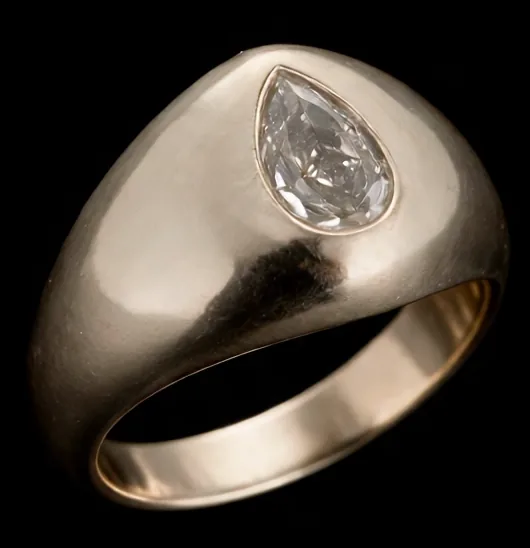

The piece pages paint this ground twice — on the page and on the hero plate — and they must match exactly or the plate reappears as a rectangle. Dial it here against the real piece, then paste the block at the bottom into both p1.html and p2.html. Outline the plate to check the two agree.

The noise is greyscale by default. These scale its red, green and blue before it is screened onto the base, so the texture itself can run warm or cold independently of the ground colour.
--plate / --grain in :root, and the three rules that use them.